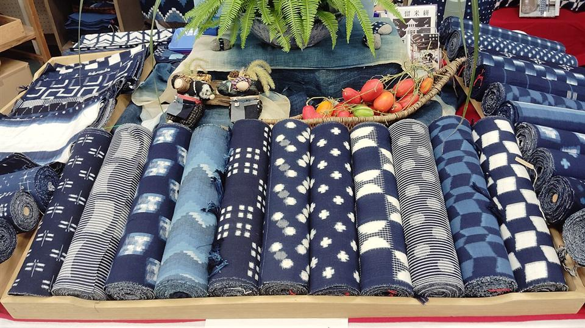
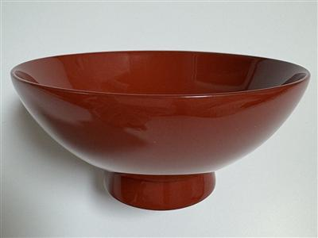
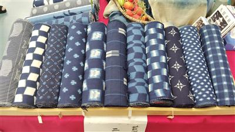
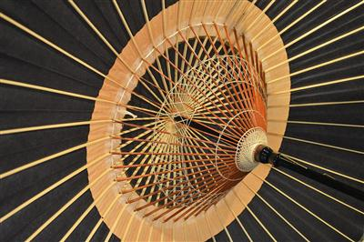
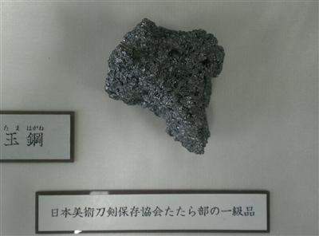
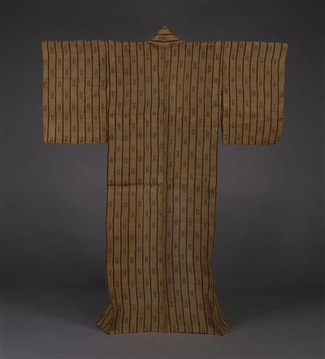
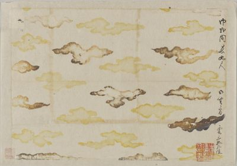
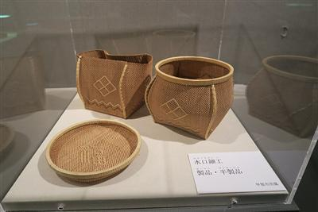
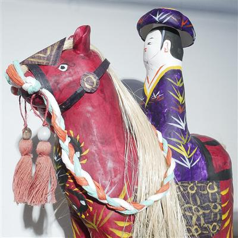

Chosen cultural issue
For hundreds of years, people in Japan have made beautiful, useful things by hand: cloth, paper, baskets, glass and more. Today, many of these traditional crafts are disappearing.
Why is this issue important?
When a craft disappears, skills and history passed down for generations can be lost with it. In the early 1970s Japan had more than 300,000 craftspeople. By 2021 there were fewer than 50,000 (FCCJ, 2021). If people learn about crafts and support them, they can survive.


Urushi lacquerware
Bowls, trays and boxes coated in lacquer made from tree sap. Japan now makes only a tiny amount of its own lacquer.

Kurume kasuri
Indigo-dyed cotton cloth from Fukuoka. Only about 20 workshops are left out of about 1,500.

Gifu wagasa
Paper and bamboo umbrellas from Gifu. Only a few people can still make the bamboo frame.

Tamahagane
The “precious steel” used for Japanese swords. The way of making it disappeared, then came back.

Kijoka bashōfu
Light Okinawan cloth woven from banana plant fibre. Every slow step is done by hand.
Miyako jōfu
Fine ramie cloth from Miyako Island. An expert weaves only about 20 cm a day.

Edo karakami
Decorative paper from the Tokyo area, printed with woodblocks. Many blocks were destroyed in 1923 and 1945.
Satsuma kiriko
Colourful cut glass from Kagoshima. It disappeared and was brought back in 1985.

Minakuchi-zaiku
Fine baskets woven from vines in Shiga. Production ended in 1970, until local people brought it back.

Ryukyu hariko
Cheerful papier-mâché figures from Okinawa. They faded away but young artists are bringing them back.